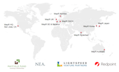

Michael Hausenblas

Chief Data Engineer EMEA, MapR.
My digital ID is: http://mhausenblas.info/#i
Twitter | Medium | Quora | Google+ | LinkedIn | GitHub | InfoQ
Contact
 Michael's ID at DERI
Michael's ID at dogfood
Michael's ID at DERI
Michael's ID at dogfood
My name is Michael Hausenblas and I work at MapR Technologies as Chief Data Engineer for the EMEA region.
MapR Technologies is the leading provider of production Hadoop. MapR offers an enterprise-grade Big Data platform—including Hadoop, Spark, Storm, etc.—supporting many mission-critical & real-time production use cases at over 500 paying customers, worldwide.
If you want to share some Big Data/NoSQL related newsworthy items with me, please use michael.hausenblas@infoq.com, and use m.hausenblas@acm.org for any other general enquiries.
Activities
Some of my active projects:
- Maintaining The Apache Spark Stack advocacy site.
- Advocating the Lambda Architecture for building fault-tolerant large-scale data processing system.
- Best practices for Big Data in the Cloud, for example, Deploying Storm on GCE.
- Contributing to the Apache Drill Incubator, where I help building an interactive, distributed query engine and contribute to drill-user.org.
- Public speaking engagements including but not limited to: various Hadoop & Big Data User Groups, Hadoop Summit (Amsterdam), Strata (London), and NoSQL matters.
More ...
Some of my past activities:
- Research and development in the realm of Internet of Things (IoT): HTTP and CoAP, Mobile Augmented Reality (position paper, demo), Live Linked Open Sensor Database.
- I was General Chair of the European Data Forum 2013 (EDF).
- Developing 'MapReduce processing of Linked Data' (mrlin), SPARQLbin.com, and the 'Rapid-Appraisal Crawler for Original Open data Nuggets' (Racoon).
- Co-creator and maintainer of the 5 ★ Open Data site, explaining costs & benefits of Open Data incl. examples for each stage.
- Initiator and co-maintainer of enable-cors.org to advocate good practices around CORS.
- Inventor of and contributor to the 'Vocabulary of Interlinked Datasets' (VoID) that allows to describe RDF-based datasets.
- I was co-chairing the W3C RDB2RDF Working Group that standardised mappings of relational data into RDF.
For software I have developed see my cards over at geekli.st and I'm also hanging out on StackExchange:

Hosted on GitHub Pages — Theme by orderedlist